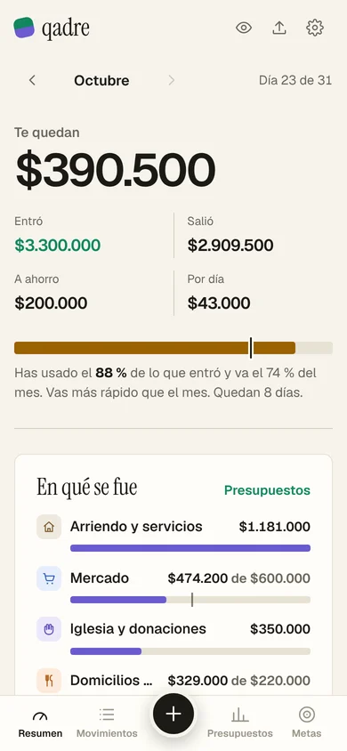
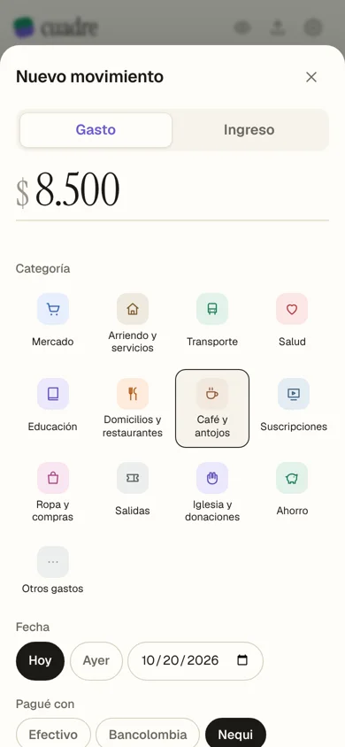
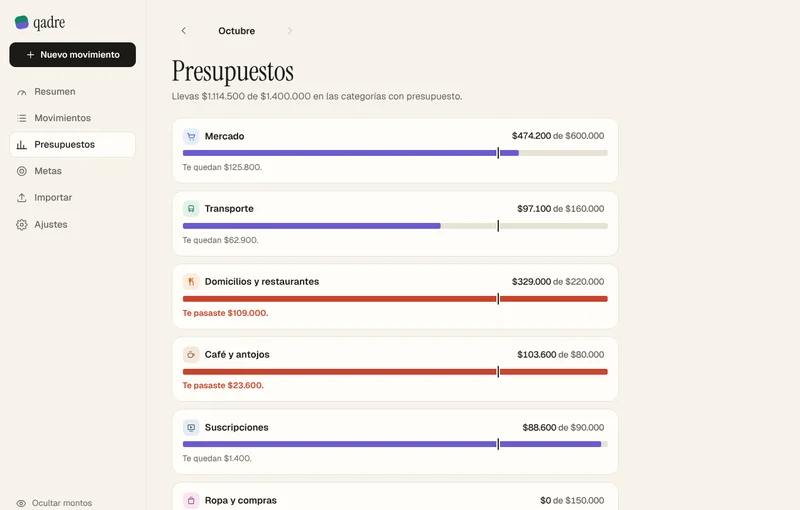
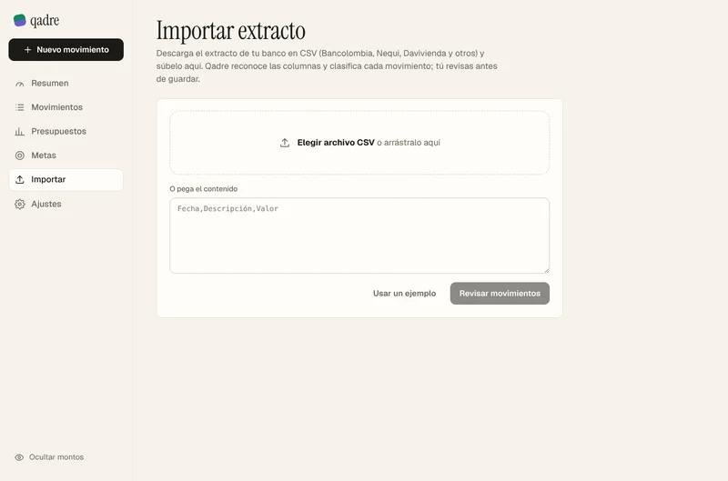
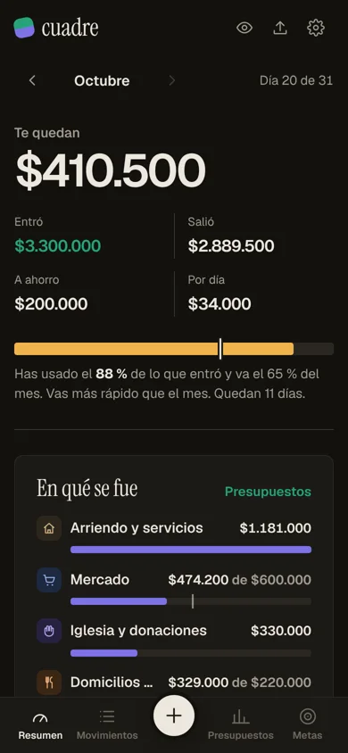

Finanzas personales · hecho en Barranquilla
¿Cuánto te queda para fin de mes?
Qadre te lo dice todos los días. Anotas lo que gastas, le pones límite a lo que más se te va y te avisa antes de que te pases, con tus números y no con reglas genéricas.
Te quedan · día 20 de 31
$879.800
Aviso del día
Toca un día para ver cómo iba el mes. Mes de ejemplo con un ingreso de $3.300.000.
02 · Avisos
Te avisa antes, no cuando ya te pasaste.
Cada aviso sale de tu propio historial: tus presupuestos, tu promedio de los últimos meses y los cobros que se repiten. Estos son los que da la app con los datos de ejemplo.
-
Día 19
Te pasaste
Domicilios y restaurantes
Llevas $329.000 de $220.000 y aún queda mes.
-
Día 20
Ritmo
A este ritmo te pasas en mercado
Vas en $474.200 y terminarías cerca de $636.000, $36.000 más de lo que presupuestaste.
-
Día 20
Gastos hormiga
14 gastos pequeños en café y antojos
Suman $103.600 este mes. A ese ritmo serían unos $1.930.000 al año.
-
Cada mes
Suscripciones
Pagas 4 suscripciones
Netflix, Disney+, YouTube Premium y Spotify: $88.600 al mes, $1.063.200 al año.
-
Meta
Vas bien
Guitarra electroacústica
Para llegar a la fecha necesitas $192.000 al mes y vienes apartando $200.000.
03 · Proyección
La proyección no es una regla de tres.
Si pagas el arriendo el día 2 y multiplicas por los días del mes, parece que vas a gastar más de dieciocho millones. Qadre cuenta una sola vez los pagos que se repiten y solo proyecta lo variable.
- Regla de tres
- $0
- Qadre
- $0
- Gasto real del mes
- $0
04 · Pantallas
Hecha primero para el celular.





Empieza con el próximo gasto.
En una semana ya sabes en qué se te va la plata. Sin crear cuenta: tus datos se quedan en tu celular.